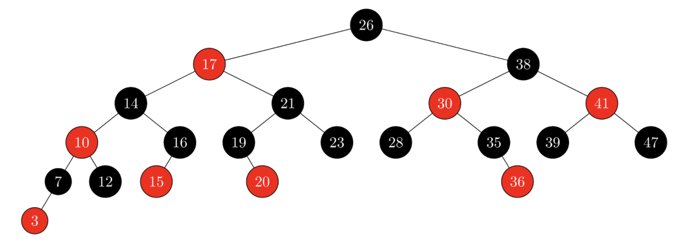

Exercise 8: Binary Search Trees and Red-Black Trees
- For the set of <1, 4, 5, 10, 16, 17, 21> of keys, draw
binary search trees of heights 2, 3, 4, 5, and 6.
- Argue that since sorting n elements takes Omega(n log n)
time in the worst case in the comparison model, any
comparison-based algorithm for constructing a binary search
tree from an arbitrary list of n elements takes Omega(n log n)
time in the worst case.
- Let T be a binary search tree whose keys are distinct,
let x be a leaf node, and let y be its parent. Using your BST
algorithm, show that y.key
is either the smallest key in T larger than x.key or the
largest key in T smaller than x.key.
- Is the operation of deletion "commutative" in the sense
that deleting xx and then yy from a binary search tree leaves
the same tree as deleting yy and then xx? Argue why it is or
give a counterexample.
- Show the red-black trees that result after successively
inserting the keys 41, 38, 31, 12, 19, 841,38,31,12,19,8
into an initially empty red-black tree.
- For the following tree, show the steps of inserting node
36 into the red-black tree:

- Based on the insert algorithm of red-black trees. Argue
that if n > 1, the tree has at least one red node.